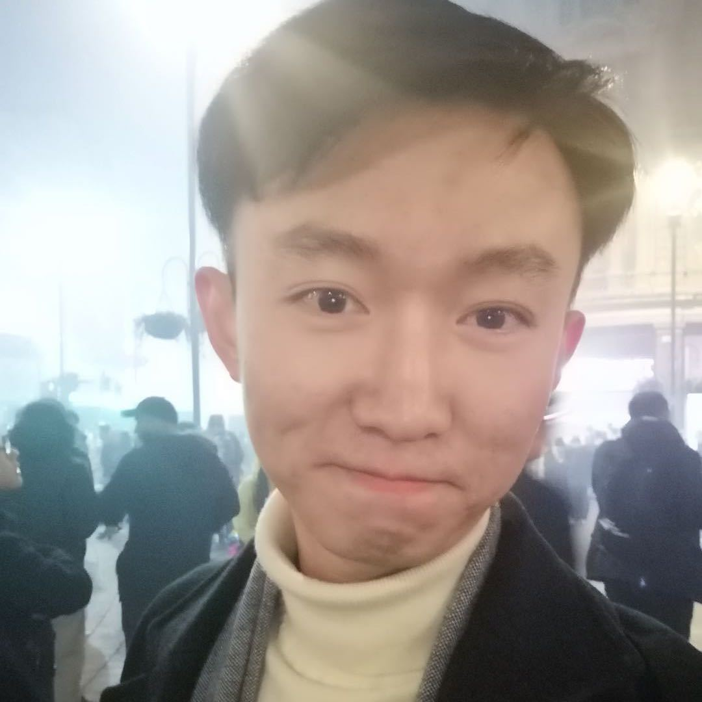

|
Chen FENG （冯晨） I'm a Postdoctoral Research Associate at University College London, working with Prof. Miguel Rodrigues. I finished my PhD at Queen Mary University of London, working in CV/ML with Prof. Ioannis Patras. I also visited University of Trento as an AI4Media Junior Exchange Fellow, working with Prof. Nicu Sebe. I earned my master’s degree from Tsinghua University, where I conducted research in bioinformatics under the supervision of Prof. Jin Gu. Before that, I received my bachelor's degree from Nankai University. |
 |
{kind=link}
News |
|
| Dec 12, 2024 | I will be chairing the BMVA Symposium on AI Security in July 2025. Stay tuned for further updates! |
| Dec 10, 2024 | PROSAC been accepted to AAAI'2025 (Oral)! |
| Jul 15, 2024 | CLIPCleaner been accepted to ACM MM'2024! |
| Jul 11, 2024 | NoiseBox been accepted to IEEE Transactions on Circuits and Systems for Video Technology! |
| May 10, 2024 | I have passed my PhD defence in 10th May! Many thanks to the examiners: Dr. Qianni Zhang and Prof. Tao Xiang. |
| Feb 28, 2024 | LAFS been accepted to CVPR'2024! |
| Jan 20, 2024 | I was invited for an open seminar talk by RIKEN AIP. |
ResearchI'm interested in various weakly supervised learning problems in the context of computer vision, including completely unlabelled self-supervised learning, semi-supervised learning with partial data having labels, and learning with noisy/coarse labels. I'm happy to discuss any related topics and possible collaborations, please simply drop me an email! |
Academic servicesConferences: ICML, CVPR, NeurIPS, AAAI, ICLR, ICCV, ECCV, AISTATS, BMVC, ACCV, ICPR, COLM Journals: IEEE Transactions on Pattern Analysis and Machine Intelligence(TPAMI), International Journal of Computer Vision(IJCV), IEEE Transactions on Neural Networks and Learning Systems(TNNLS), IEEE Transactions on Circuits and Systems for Video Technology(TCSVT), Image and Vision Computing |